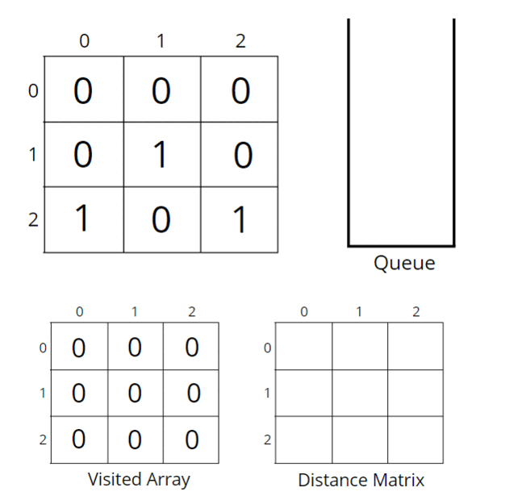

Problem Statement: Given a binary grid of N*M. Find the distance of the nearest 1 in the grid for each cell.
The distance is calculated as |i1 - i2| + |j1 - j2|, where i1, j1 are the row number and column number of the current cell, and i2, j2 are the row number and column number of the nearest cell having value 1.
Examples:
Example 1:
Input:
Output:
Explanation:
0's at (0,1), (1,2), (2,1) and (2,2) are at a distance of 1, 1, 1 and 2 from 1's at (0,0), (0,2), (2,0) and (1,1) respectively.
Example 2:
Input:
Output:
Solution
Disclaimer: Don't jump directly to the solution, try it out yourself first.
Intuition:
Breadth First Search, BFS, is a traversal technique where we visit the nodes level-wise, i.e., it visits the same level nodes simultaneously, and then moves to the next level.
The intuition is that BFS will take a step from cells containing 1 and will reach out to all zeros that are at a distance of one. Apparently, we can say that the nearest 1 to the 0s is at a distance of one. Again if we take another step, we will reach the next set of zeros, for these zeros 1 is at a distance of two. If we continue the same, till we can go, we can reach all the 0’s possible.
We will choose the BFS algorithm as it moves step by step and we want all of them to traverse in a single step together so that we can have a minimum count with us.
Approach:
Initial configuration:
- Queue: Define a queue and insert the pair of starting nodes’ coordinates along with the steps (<coordinates, step>). For example, ((2, 1), 2) means cell (2, 1) is the source node and the nearest 1 can be found at a distance of 2 from the node.
- Visited array: an array initialized to 0 indicating unvisited nodes.
- Distance matrix: stores the distance of the nearest cell having 1 for every particular cell.
The algorithm steps are as follows:
- Push the pair of starting points and its steps (<coordinates, stept>) in the queue, and mark the cell as visited.
- Start the BFS traversal, pop out an element from the queue every time, and travel to all its unvisited neighbors having 0.
- For every neighboring unvisited 0, we can mark the distance to be +1 of the current node distance and store it in the distance 2D array, and at the same time insert <{row, col}, steps+1> into the queue.
- Repeat the steps until the queue becomes empty and then return the distance matrix where we have stored the steps.
Consider the following illustration to understand how BFS traverses the cells and calculates the distance of the nearest 1 in the grid.

How do set boundaries for 4 directions?
The 4 neighbors will have the following indexes:
Now, either we can apply 4 conditions or follow the following method.
From the above image, it is clear that the delta change in the row is -1, +0, +1, +0. Similarly, the delta change in the column is 0, +1, +0, -1. So we can apply the same logic to find the neighbors of a particular pixel (<row, column>).
Code:
#include<bits/stdc++.h>
using namespace std;
class Solution
{
public:
//Function to find the distance of nearest 1 in the grid for each cell.
vector<vector<int>>nearest(vector<vector<int>>grid)
{
int n = grid.size();
int m = grid[0].size();
// visited and distance matrix
vector<vector<int>> vis(n, vector<int>(m, 0));
vector<vector<int>> dist(n, vector<int>(m, 0));
// <coordinates, steps>
queue<pair<pair<int,int>, int>> q;
// traverse the matrix
for(int i = 0;i<n;i++) {
for(int j = 0;j<m;j++) {
// start BFS if cell contains 1
if(grid[i][j] == 1) {
q.push({{i,j}, 0});
vis[i][j] = 1;
}
else {
// mark unvisited
vis[i][j] = 0;
}
}
}
int delrow[] = {-1, 0, +1, 0};
int delcol[] = {0, +1, 0, -1};
// traverse till queue becomes empty
while(!q.empty()) {
int row = q.front().first.first;
int col = q.front().first.second;
int steps = q.front().second;
q.pop();
dist[row][col] = steps;
// for all 4 neighbours
for(int i = 0;i<4;i++) {
int nrow = row + delrow[i];
int ncol = col + delcol[i];
// check for valid unvisited cell
if(nrow >= 0 && nrow < n && ncol >= 0 && ncol < m
&& vis[nrow][ncol] == 0) {
vis[nrow][ncol] = 1;
q.push({{nrow, ncol}, steps+1});
}
}
}
// return distance matrix
return dist;
}
};
int main(){
vector<vector<int>>grid{
{0,1,1,0},
{1,1,0,0},
{0,0,1,1}
};
Solution obj;
vector<vector<int>> ans = obj.nearest(grid);
for(auto i: ans){
for(auto j: i)
cout << j << " ";
cout << "\n";
}
return 0;
}
Output:
1 0 0 1
0 0 1 1
1 1 0 0
Time Complexity: O(NxM + NxMx4) ~ O(N x M)
For the worst case, the BFS function will be called for (N x M) nodes, and for every node, we are traversing for 4 neighbors, so it will take O(N x M x 4) time.
Space Complexity: O(N x M) + O(N x M) + O(N x M) ~ O(N x M)
O(N x M) for the visited array, distance matrix, and queue space takes up N x M locations at max.
import java.util.*;
class Solution
{
//Function to find distance of nearest 1 in the grid for each cell.
public int[][] nearest(int[][] grid)
{
int n = grid.length;
int m = grid[0].length;
// visited and distance matrix
int vis[][] = new int[n][m];
int dist[][] = new int[n][m];
// <coordinates, steps>
Queue<Node> q = new LinkedList<Node>();
// traverse the matrix
for(int i = 0;i<n;i++) {
for(int j = 0;j<m;j++) {
// start BFS if cell contains 1
if(grid[i][j] == 1) {
q.add(new Node(i, j, 0));
vis[i][j] = 1;
}
else {
// mark unvisted
vis[i][j] = 0;
}
}
}
int delrow[] = {-1, 0, +1, 0};
int delcol[] = {0, +1, 0, -1};
// n x m x 4
// traverse till queue becomes empty
while(!q.isEmpty()) {
int row = q.peek().first;
int col = q.peek().second;
int steps = q.peek().third;
q.remove();
dist[row][col] = steps;
// for all 4 neighbours
for(int i = 0;i<4;i++) {
int nrow = row + delrow[i];
int ncol = col + delcol[i];
// check for valid unvisited cell
if(nrow >= 0 && nrow < n && ncol >= 0 && ncol < m
&& vis[nrow][ncol] == 0) {
vis[nrow][ncol] = 1;
q.add(new Node(nrow, ncol, steps+1));
}
}
}
// return distance matrix
return dist;
}
public static void main(String[] args)
{
int[][] grid = {
{0,1,1,0},
{1,1,0,0},
{0,0,1,1}
};
Solution obj = new Solution();
int[][] ans = obj.nearest(grid);
for(int i = 0; i < ans.length; i++){
for(int j = 0; j < ans[i].length; j++){
System.out.print(ans[i][j] + " ");
}
System.out.println();
}
}
}
class Node {
int first;
int second;
int third;
Node(int _first, int _second, int _third) {
this.first = _first;
this.second = _second;
this.third = _third;
}
}
Output:
1 0 0 1
0 0 1 1
1 1 0 0
Time Complexity: O(NxM + NxMx4) ~ O(N x M)
For the worst case, the BFS function will be called for (N x M) nodes, and for every node, we are traversing for 4 neighbors, so it will take O(N x M x 4) time.
Space Complexity: O(N x M) + O(N x M) + O(N x M) ~ O(N x M)
O(N x M) for the visited array, distance matrix, and queue space takes up N x M locations at max.
Special thanks to Vanshika Singh Gour for contributing to this article on takeUforward. If you also wish to share your knowledge with the takeUforward fam, please check out this article. If you want to suggest any improvement/correction in this article please mail us at write4tuf@gmail.com